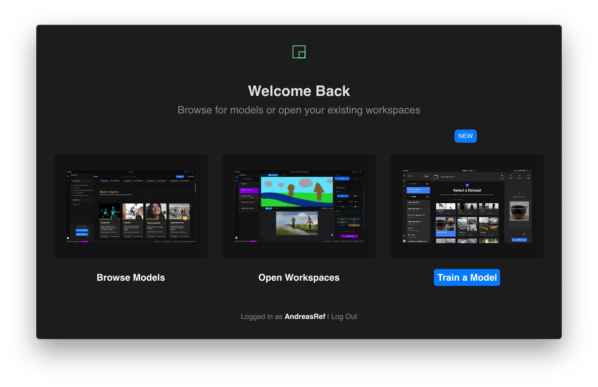
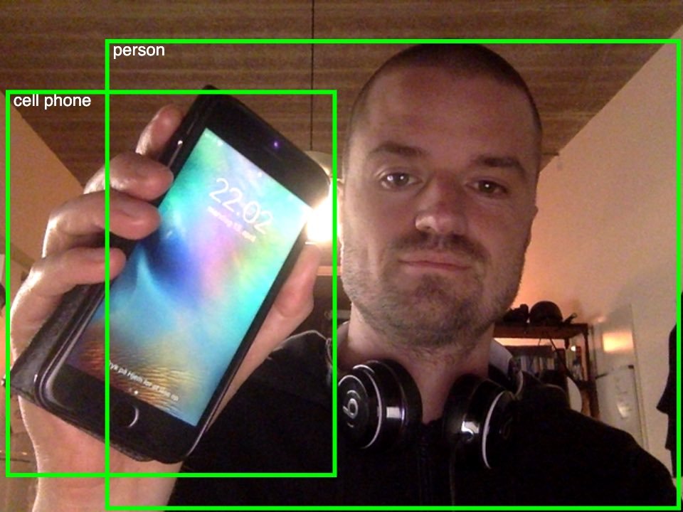

Machine Learning Workshop by AndreasRef
Day 3: RunwayML continued
Gathering data
Training models in Runway
Inspiration
Day 2: RunwayML
- 
1) Run a local model: COCO-SSD
2) Run a remote model: Fast Style Transfer + StyleGan + First-Order-Motion-Model + im2txt
3) Chaining models: im2txt - AttnGAN
4) Exporting
- Video from tweet by J3n Sykes using First-Order-Motion-Model
5) Exercise: 30 minute free time to explore
- Get a feel for some different models in Runway by experimenting with them.
Have patience when running models remotely, it often takes a few minutes to get them started.
If the remote GPU takes more than 2-3 minutes to connect, consider restarting Runway...
Recommended models to experiment with are: GPT-2, SPADE-Landscapes, PhotoSketch, YOLACT, Adaptive-Style-Transfer, DeOldify, DenseDepth, Pix2Pix, Places365 & First-Order-Motion-Model, but feel free to explore and share your explorations on Workplace. Try to post interesting findings on the Slack channel
Homework
- Pick one or more models from Runway and try to come up with a concept: Silly, artistic, helpful, playful, whatever you feel like...
Consider what it might take to build a prototype of your idea? Would Runway be enough, or would you need to connect the model to another software and do a bit of coding to glue things together? You are not expected to code anything, since we you have not learned how to connect Runway to other stuff yet, but give it some thought. Try to flesh out your concept however way you feel (drawings, flowcharts, video, keynote etc), so you can communicate it to the class tomorrow morning, where 2-3 students will be picked randomly to present their ideas.
Day 1 + 2: ml5js
Templates, examples and exercises
0) p5js online editor
1) Train a classification algorithm

- Simple template: Webcam classifier. Alternative press and hold version
- Exercise: Train a classifier to distinguish between two different classes. Make the sketch output a descriptive text for each class.
- Exercise: Try to duplicate and change the Webcam classifier + image example so it outputs images that represent your two classes.
Stuck? Here is a tutorial on how to upload files to your sketch - remember that you have to own/dublicate the sketch before you can add files to it.
2) ML5 MobileNet pretrained classification

3) COCO-SSD pretrained multiple object detector
- 
4) Teachable Machine + ML5

Teachable Machine basic templates:
- Exercise: Train the Image Model of Teachable Machine using your webcam (or a smaller dataset of still images if you happen to have one). Export the model and copy the URL to the trained model into the Image Classification Template sketch to update the
modelURL. See this tutorial for more info on exporting.
If you finish early check out this article for tips and tricks on how to train a more robust model with Teachable Machine.
Teachable Machine + outputs
5) ML5 regression with webcam


- Exercise: Train the regressor and use the continuous output value slider.value() to control something. It is easiest to build something on top of Simple example: Webcam regressor.
6) ML5 PoseNet pose detection

7) ML5 Neural Network + KNN classification
- Advanced example: Classify stream of serial values - needs p5.serial to connect to Arduino directly from the browser
8) Bonus: Speech + face

- Pretrained Facial Emotions (with clm tracker)for advanced coders needing more stable tracking, recognition, age estimation etc see face-api.js (external link)
9) Even more fun examples🤓
10) Homework day 1
- Mini project!
Do a quick brainstorm, pick a concept and build a fast prototype that shows a key interaction of your idea. You can make something creative, useful and/or silly - up to you - just make sure it has a machine learning component somewhere! It is more about getting hands on experience and proving an idea fast, than making something unique or brilliant.
Since time is short, it is recommended to build something on top of a previous exercise and focus on a simple interaction.
Often a good idea can be made into a lo-fi interactive prototype with 5 minutes of training, designing a few static images + changing a few lines in the code, so the right images are displayed for the right classes. Or even simpler: Just outputting some text on the canvas!
If you plan to train a classifier please stick to a few (2-3) classes as a proof of concept rather than trying to make something work for a lot of different classes.
How much coding you do is up to you! If you don't feel comfortable, you can choose to focus on concept, designing a fun output or collecting data and training a more robust model. If you get stuck, go back to one of the templates and start over.
See this document for tips on recording your own data.
I will randomly pick one or two people to present tomorrow morning, so everyone needs to have something ready to show (video, live demo, quick Keynote presentation etc...)
Having issues running the examples in the browser?
- Make sure you are running them in Google Chrome
- Webcam access on Windows 10: Select Start > Settings > Privacy > Camera. Set "Let apps use my camera" to "On". Make sure Chrome has access to use the camera.
- Older computers with less powerful graphics cards might run out of memory if you record hundreds or thousands of examples from the webcam, especially on Windows. If it happens, switch to another computer or be more modest when recording training data.
Overview of tools + tips
Other links
Contact Andreas Refsgaard
Website / Email / Facebook / Twitter / Instagram / GitHub / Vimeo